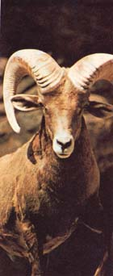

Outdoor Photographer
The author shares his experiences with becoming a professional outdoor photographer.
By the Mother Earth News editors
March/April 1977
When it comes to outdoor photography, Jim Tallon of Phoenix, Arizona knows his business ... because it's been his business for the last 18 years. We believe him, then, when he says that it isn't hard for novice shutterbugs to break into freelance outdoor photo work. "I conservatively estimate that there are four to five thousand paying markets wide open to beginners," Jim maintains. "And all you need in order to start selling to these markets are a camera, a love of nature, and an eye for the unusual."
YOU CAN MAKE MONEY AS AN
On a chilly fall day, a flock of Canadian geese flies over our log cabin in Montana, honking loudly. I rush to the front porch to take a picture of the birds ... and later sell the shot to Field & Stream for $150.
On the shores of Lake Pleasant-near Phoenix, Arizona-I happen to spot some campers silhouetted against the setting sun. Again, I bring my camera into action ... and take a photo that sells to Kampgrounds of America for $200.
In southern Utah's Monument Valley, I step onto the centerline of a highway and snap a "scenic" shot of the pavement running through the red rock temples in the distance. This one later becomes a Firestone tire ad that appears in several top magazines, thanks to the New York photo agency that sold the photo for $1,500.
If you haven't guessed, I make my living selling pictures: I'm a freelance outdoor photographer. (I'm also a writer, but it's the photo work that really pays my rent.) Given a camera and film, I can park just about anywhere and survive.
I got into this business on a part-time basis 18 years ago because I sought freedom from the regimentations of our eight-to-f ive workaday society. When I "dropped out" in 1967 to freelance full time, I wanted more than anything to [1] enjoy the wonders of nature and [2] get paid for doing it. And thanks to my camera gear-I've been able to do just that. With the "tricks of the trade" I'm about to give you here, you should have quite a head start toward being able to do the same thing.
THE EQUIPMENT YOU'LL NEED
Naturally, you can't take-much less sell -pictures with a camera or lens you don't have. (On the other hand, you needn't rush out and buy every $200 photographic doodad that ever came out of Japan. I broke into this business with an absolute minimum of equipment ... and you can too.)
First, you need a camera. And unquestionably, the only kind of camera to buy is a 35-millimeter single-lens reflex with a built-in light meter. ("Single-lens reflex"-for short-refers to a lens and mirror setup that allows you to view, frame, and focus your subject while looking through the camera's main lens, rather than through a separate view finder.)
Without a doubt, the 35-mm SLR is by far the most practical camera ever invented. It's economical to buy and use (good previously owned models can be purchased for under $150), and-contrary to what you may have thought-you don't have to be a mechanical wizard to learn to operate one. (The instruction booklet that comes with the camera will tell you 95% of what you need to know to take perfectly exposed pictures every time, starting with your very first roll of film.)
In addition to a camera (which should be purchased with a "normal" general-purpose lens), you'll want to buy several other items, such as:
[1] A sturdy tripod, to steady the camera while you shoot. (Photos intended for publication must be tack-sharp. And usually, you won't be able to achieve such sharpness unless the camera is held absolutely motionless when you snap a picture.)
[2] A 28-mm "wide-angle" lens. (The designation "28-mm" refers to the lens's focal length. The shorter the focal length, the wider the photo angle and the more you can cram into your viewing frame.) The 28-mm has become my standard shooting lens for scenics, interior shots (of tents, boats, etc.), and semi-close-ups.
[3] A short telephoto (135-mm) lens, to bring not-too-distant subjects a bit closer.
[4] A medium telephoto (400-mm) lens, to really pull in far-off subjects. (Suppose you're in the field, you hear a clatter some distance away, and you look up to see two bull elk engaged in a savage baffle for a harem. You know that if you can capture that scene on film you can sell it for a lot of money. You also know that if you were to try approaching close enough to catch the action on film with a normal-say 55-mm-lens, you'd surely scare the animals into flight. But with a 400-mm-maybe even a 135-mm-you can stand back and record the event without spooking the participants.)
[5] A bellows. This handy device-an accordion-like box that fits between camera body and lens-allows you to get closer to your subject than the near-focus range of your lens would normally allow. (When used in conjunction with a 400-mm telephoto, a bellows allows you to stand ten feet away from a butterfly on a flower ... yet fill the frame with nothing but that single insect and blossom.)
The above "beginner's kit" will allow you to handle most any photographic situation right from the start, without putting too large a crimp in your pocketbook. In dollars and cents, here's approximately what each item will cost you:
Yes, you really can get a used 135-mm lens for $25. I actually bought one for that amount a few years ago and while- mechanically speaking-it wasn't the greatest, it did give me darn sharp photographs. And, after earning hundreds of dollars with it, I turned around and sold that same lens myself ... again for $25.
Perhaps you're wondering: "Isn't it possible to make money with just a 35-mm camera and a normal shooting lens?" The answer is yes. I could probably earn a fair income (knowing what I know about freelance outdoor photography) using nothing more than an SLR fitted with a 55-mm lens. But I'd lose a lot of bucks nonetheless. And a novice would lose even more.
Of course you don't want to go to the other equipment-buying extreme either, although most of us do at one time or another. Years ago, for instance, I went through a phase known in the trade as "chrome collecting" (purchasing camera gear just for the sake of purchasing camera gear) ... and I found out very quickly that it doesn't pay. Today I have a rule that every piece of photo equipment I buy must earn its keep. I suggest you adopt a similar policy.
HAT ABOUT ZOOM LENSES?
I didn't put a zoom lens (that is, a telephoto lens of manually adjustable focal length) on our list of essential equipment for the simple reason that inexpensive zooms often give photos of poor contrast and only borderline sharpness. When your equipment has paid for itself-and then some-you'll be able to afford a quality zoom. For now, though, stick with the fixed-focal-length telephotos.
WHERE AND HOW TO SHOP FOR PHOTO GEAR
In the photographic equipment business, prices vary enormously ... which means that to get the best camera and lens deal, you've got to shop around. Just a few days ago, I saw a used Minolta SRT-101 for sale for $250 ... a bit high. A couple of blocks away, though-at another store-I saw the identical item tagged at $150 ... a difference in price of a full $100! I could cite dozens of similar examples.)
Used equipment is sold through newspaper classifieds and some camera shops while most new photo gear is marketed either through department stores, photo retailers, or mail-order outlets. The best way to get an idea of what the various makes and models of cameras, lenses, etc. cost is to scan the ads that appear in Popular Photography and similar magazines. You'll discover that some mail-order firms offer equipment at rock-bottom prices ... often no more than 10% over wholesale. (I should warn you, however, that the occasional inconveniences you may or may not encounter when shopping by mail-such as slow service, goods arriving in damaged condition, etc.-can more than offset any price savings.)
If practicable, plan on doing your shopping in the nearest big city ... the bigger, the better. You'll find that the larger the city in which you shop, the greater the competition will be between stores ... and the lower the prices you'll have to pay.
FILM: BLACK AND WHITE, OR COLOR?
I deal solely in color slides (or transparencies ), and I recommend you do too. Black and white costs more to work with in the long run- because of the many processing steps required to produce a finished 8 X 10 glossy (which is the only kind of B & W picture editors will buy)-and the pay for B & W photography is generally much less than for color.
As for the type or brand of film to buy: My advice is to stick with Kodachrome. (Look for "KR 135-20" or "KM 135-20"-or numbers ending in "-36", if you want 36- exposure rolls-on the end of the box.) You'll see dozens of other kinds of film on the market-some with fancy professionalsounding names- but in general, they're not worth bothering with. I shoot Kodachrome 90% of the time. You should, too.
PICTURE-TAKING FUNDAMENTALS
Obviously, I can't-in these few pages-give you a complete course in how to frame, focus, compose, and expose out door photographs. (Dozens of books have been written on the subject, however, and I urge you to consult them.) I would like, though, to offer you a few tips that I think will help you produce salable pictures more consistently.
[1] Take the time to compose your photo as you look through the lens, before you trip the shutter. (A feel for composition can be gained by studying the published work of other photographers. You might even find it useful to take a portfolio of photo clippings with you on your outings.)
[2] Scrutinize every item-near and far-in your viewing frame. Does everything "look right"? (Horizons that slope-but aren't supposed to-and clear-blue skies that are marred by distant airplanes are the kinds of things photo editors DO NOT want to see.)
[3] Perhaps it goes without saying ... but in case it doesn't, be sure your lens is fastidiously clean.
[4] Also, focus the camera sharply on your subject. (And remember that the smaller your lens opening- i.e., the larger your fstop -the greater your depth of field and the less you'll need to worry about focusing.)
[5] Even if your camera has a built-in light meter, make a number of shots of the same subject using several combinations of lens openings and exposure times. (This is known as bracketing your exposure)
[6] And shoot at least twice as much film as you think you should. Actually, I always shoot three shots of any given subject ... and I've been known to shoot as many as 100. This is because the cheapest way to duplicate a slide is to simply take more pictures (otherwise known as "duping in the camera'' ). If you dupe this way, the cost will be about 19 cents, per slide ... while if you have a processor make copies of your originals, the copies will run 35 cents to 40 cents a piece and the quality will be-at best-second-rate.
DEVELOPING AN EYE FOR WHAT SELLS
For beginners, the most difficult part of getting started in freelance photography is learning to recognize what will sell. Obviously, if you stumble onto a fight between a grizzly bear and an elk with an eagle on its antler as a spectator, you know you've got a winner! But unfortunately, such scenes are few and far between.
What do you do between such spectacular situations? You become aware of little things. You learn, in other words, to create selling photographs. Let me give you a few examples.
Recently-at a family reunion in New Mexico-I saw one of my lovely young nieces grab a rope and go swinging out over an earthen irrigation ditch, her long hair trailing in the breeze. I immediately had her repeat this motion several times while I took pictures of the action with the pocket camera I almost always carry with me. (in this business, it pays to take a camera with you wherever you go.) The best photo of the lot sold to Grit (the weekly tabloid) for $40.
Another time, I baited a pinyon jay into posing atop my camera's 400-mm lens and photographed the bird with a second camera from inside our Montana cabin. This shot also went to Grit for $40.
Then there was the picture I took looking down at a fisherman from the top of his rod as he stood poised to cast a lure. Fishing World paid me $75 to use this shot on their cover.
Altogether, then, these three photos brought in $155 ... not exactly big money, but enough- nonetheless-to either pay the grocery bills for a few weeks or buy 30 rolls of film (that can subsequently snowball into more dollars) where I trade. And all I did to earn this tidy sum was create a few eye-catching, slightly offbeat photos.
The best way to learn what sells is to plow through every magazine you come across, scrutinizing-in the process-each and every picture you find and breaking the photos down into components. (I do this all the time: at home, at the newsstand, at the dentist's office, etc.) This'll give you an idea of what kinds of photos the professionals take and-more important-what kinds of pictures editors buy.
HOW TO PREPARE SLIDES FOR MARKET
When my slides come back from the processor (a Kodak dealer who specializes in genuine Kodak processing ), I immediately sort out the "good" from the "not-so-good" shots and prepare the former for submission-in batches of 20 to 60-to my regular markets.
The first thing I do is label each slide with a code. (For instance, I might use "FSH 42-7601 ARIZ." to indicate that the slide is a fishing shot taken in Arizona and labeled in the 42nd week of 1976.)
Along with a code designation, I assign each slide a short caption, such as "Trout fisherman in Glen Canyon". Both the code and the caption will-if kept to three typed lines-just fit on an Avery S-828 1/2" X 1-3/4" pressure-sensitive label. (You can find these labels in nearly any large stationery or office supply store.)
Next, I stamp my name and address on each slide. (Check the Yellow Pages under "Rubber Stamps". A small, three-line stamp should cost you no more than $2.50.)
Then I assemble the slides twenty at a time in plastic slipcases specifically designed to hold slides. (Chances are, your local camera shop carries these plastic holders. If not, though, you can buy good ones for $25 per 100-plus $2.50 postage and handling-from 20th Century Plastics Inc., 3628 Crenshaw Blvd., Los Angeles, Calif. 90016.) Editors like these plastic sheets since they make it possible to view large numbers of slides without handling the frames individually. I like the sheets for the same reason and use them to file my transparencies.
OK. At this point I rubber-band my plastic slipcases (however many there are) between two pieces of corrugated cardboard (cut from boxes I get free at the grocery store) and slide the whole works into a 10 X 13 manila envelope.
If I'm submitting samples to a new market, I also enclose a cover letter addressed to a specific editor (the photo editor, if there is one) by name. In the letter, I explain that [1] I'm a professional photographer, [2] I'd like to submit the enclosed slides on speculation (i.e., for the editor's immediate approval/disapproval), and [3] I have many more slides in stock.
Whether I'm sending a package out "cold" or submitting it to a familiar market, I always enclose a large self-addressed stamped envelope (SASE). And I also send along a pre-addressed postcard on which I've written, " [The name of the magazine] has received fishing slides [or whatever]." (This makes it easy for the editor to acknowledge receipt of my submission ... something he might not otherwise get around to for weeks, or months.) finally, I seal the envelope and send it out via first class mail. (If the contents are exceptionally valuable, I'll send them insured and registered, receipt requested.) Fortunately, the U.S. Postal Service-despite its poor reputation-has always managed to get my pictures through.
STOCK FILE SALES FOR ADDED INCOME
With time, even an infrequent picture snapper will accumulate a large backfile of slides. Mine numbers 60,000 + entries, and because dozens of editors and publishers know I have this backlog I frequently receive unsolicited requests for photos.
How do editors know I have a large stock file? I remind them. Periodically, I make up a form letter that lists 60 to 70 categories of pictures and that says something like, "Dear Editor and Publisher: Below is a partial listing of the 60,000 color transparencies I have on file ... let me know your needs." After having this letter reproduced by a local printer for about $6.00 per 300 copies, I then mail it out to as many magazine and Sunday supplement editors, book publishers, etc., as I have addresses for.
Following each mailing I always get some sales right away, and others later on. And since the slides have already been taken, processed, and paid for, the income I receive from these sales always seems like easy money.
SPECIAL ASSIGNMENTS
After you've made repeat sales and have gotten on friendly terms with a few editors, chances are you'll occasionally be given special assignments. This is when things really get exciting.
I remember once, an editor called and asked me for a specific kind of shot which I thought (at the time) I had in my stock file. After promising to deliver the slides, however, I suddenly remembered that I'd tossed those very pictures out sometime earlier because they hadn't been top-quality. Fortunately, the photos the editor needed were of something I could cover locally and I was able to rush out, shoot more pix, arrange for overnight processing, and mail the slides the next day. When I told the editor the story, he was impressed . . . and I was certainly impressed by the $300 check he later sent me for four hours' work!
HANG IN THERE
In parting, I can only say: [1] Study composition. [2] Strive for ultra-sharp, exceedingly colorful pictures. [3] Send your work to the right markets (boat shots to boating magazines, hunting shots to hunting magazines, etc.). [4] Shoot lots of photos. (Film is the least expensive part of your operation.) And finally, [5] hang in there ... because persistence does pay off!
WHERE TO SELL YOUR OUTDOOR PICTURES
All right. Now that you've got that really terrific shot of a bumblebee gathering pollen from a bright yellow flower, where do you sell it?
Invariably, the first markets to come to the beginning freelancer's mind are National Wildlife and National Geographic. I can tell you from experience, though, that these are two of the hardest markets to crack.
A better place to start is with the Sunday supplement magazines, which are-I've learned -generally quite receptive to the work of local photographers. Buy a copy of each Sunday newspaper sold in your area and find out which one(s) publish their own Sunday magazines ... then submit a sample of your work "on spec" to the appropriate editor(s). A sale here won't bring you much money-probably only $25 or $50-but it will establish you as a published photographer, and thus open the door to further sales ... and not just with the Sunday supplements but with other markets.
What are these "other markets"? Look around you. Calendar companies, magazines, book publishers, and advertising agencies all use outdoor photography ... lots of it. One book that contains the addresses of 3,667 such firms-along with editors' and art directors' names, information on pay rates, special requirements, etc.-is Artist's & Photographer's Market '77 (available for $10.95 plus 50 cents handling from the publisher- Writer's Digest, 9933 Alliance Rd., Cincinnati, Ohio 45242-or from Mother's Bookshelf). No freelance craftsperson should be without a copy of this fine reference manual.
You'll also find a good deal of useful marketing info in Arvel W. Ahlers's excellent guide, Where & How to Sell Your Photographs (available in paperback from Writer's Digest for $7.95 plus 50 cents handling).
And sometime, perhaps while you're at the local library, you might want to thumb through a remarkable volume called Writer's Market '77 ($13.50 plus 50 cents handling from Writer's Digest or Mother's Bookshelf). While most of the 8,577 paying markets given in this book are interested in words rather than pictures, the listing of magazine and book publishers is far more exhaustive than the one given in Artist's & Photographer's Market '77.
That should be enough to get you started. Just remember: The more work you send out-and the more editors you come in contact with-the greater your chances of getting published ... and the better the outlook for your bank account.-JT.
|
|
|
|
|
|
|
|
 |
|
 |
|
|
|
|
|
|
|
|